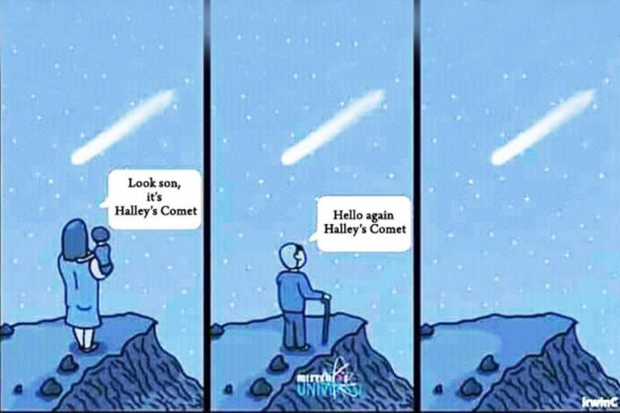
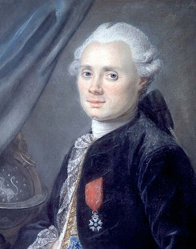
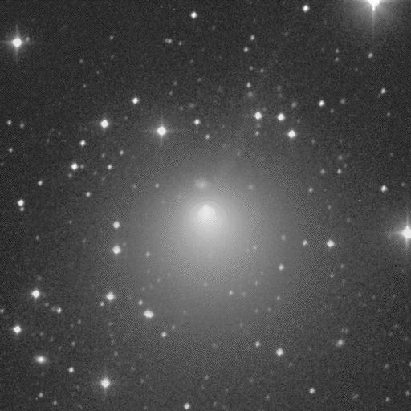
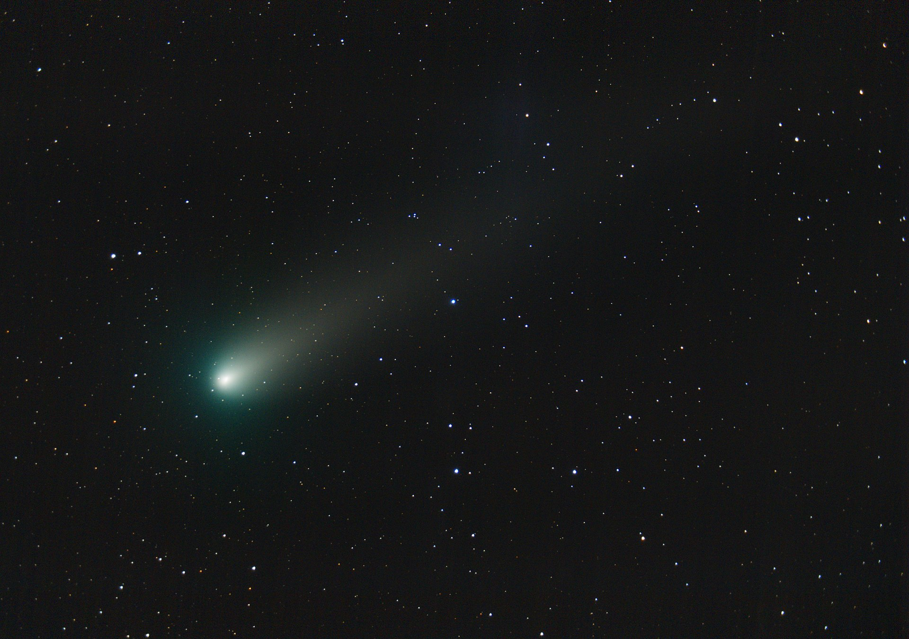
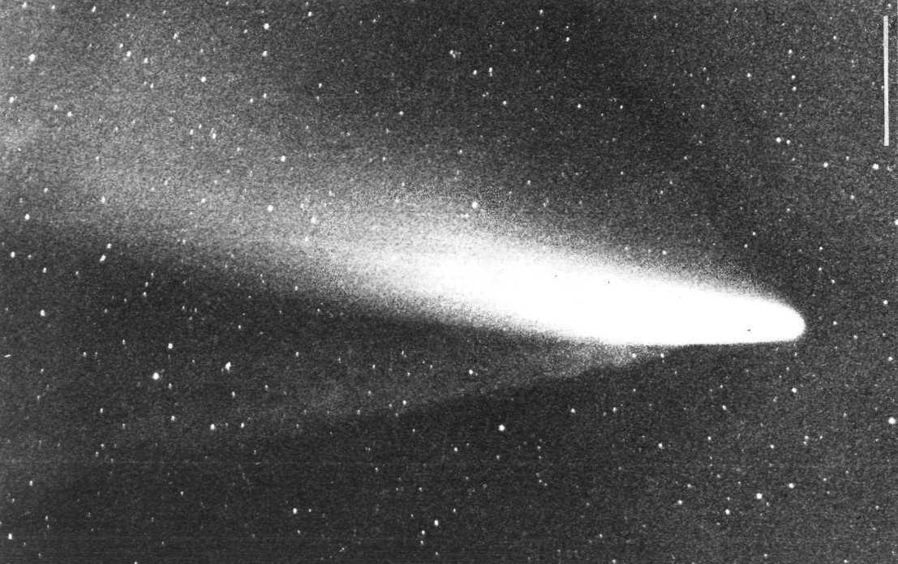
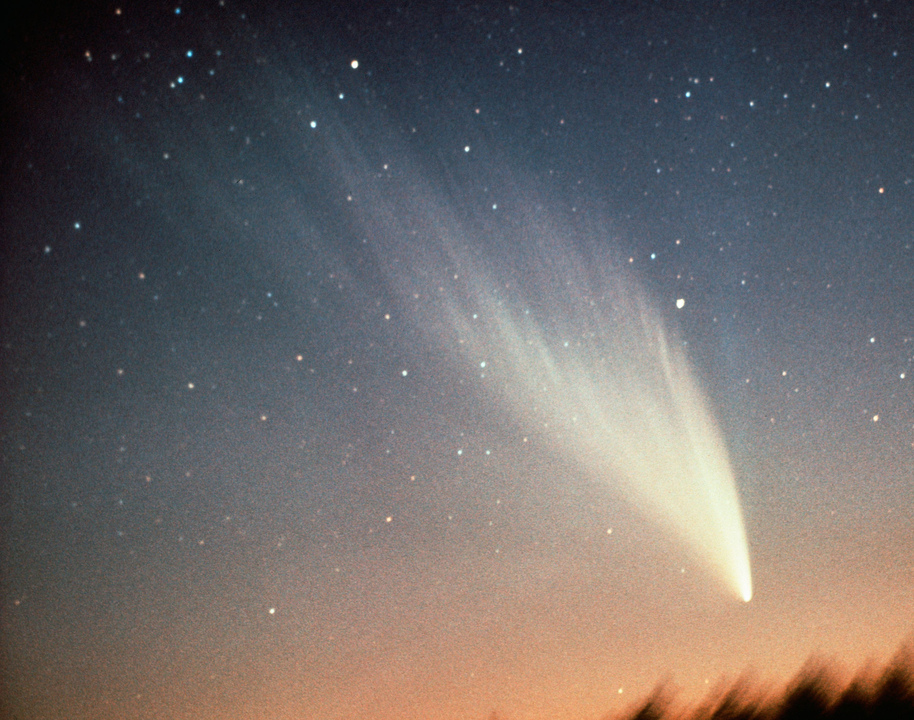
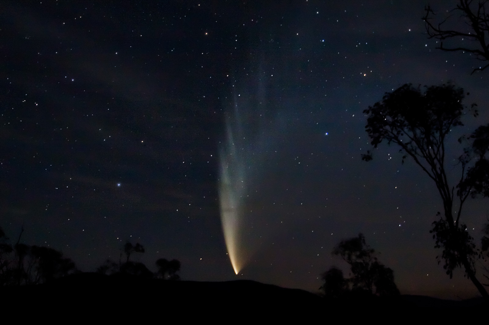

Прекрасні та величні, яскраві комети з початку людської історії заворожували та дещо лякали нас. З часом люди почали будувати пристрої, що допомагають у спостереженнях та дозволяють побачити небесні об'єкти ще до того, як вони стануть помітні неозброєним оком. Астрономи навчилися обчислювати радіус та орбіти комет, відрізняти їх одну від одної, дізнаватися їх походження та шлях, а також прогнозувати їх подальшу долю - деякі комети продовжують свій рух після проходження Сонячної системи, деякі згорають або навіть розпадаються на частини.
Як добре, що зараз нам не треба бути видатними вченими з великим багажем знань та доступом до передових телескопів, щоб дізнатися про найяскравіші комети, що відомі людству! До вашої уваги - 8 саме таких комет:
Комета Галлея

Комета Галлея — короткоперіодична комета, видима із Землі кожні 75-79 років. Вона є єдиною відомою короткоперіодичною кометою, яку регулярно видно неозброєним оком із Землі, і, отже, єдиною кометою, яку можна спостерігати неозброєним поглядом двічі за людське життя. Востаннє вона з'являлася у внутрішніх частинах Сонячної системи у 1986 році, а наступного разу з'явиться у середині 2061 року.
Періодичні повернення комети Галлея у внутрішню частину Сонячної системи спостерігалися і фіксувалися астрономами всього світу принаймні з 240 до н.е. Але тільки в 1705 році англійський астроном Едмон Галлей зрозумів, що ці явища були повторними появами однієї і тієї ж комети. Внаслідок цього відкриття комета названа на честь Едмонда Галлея.

Комета Лекселя

D/1770 L1, широко відома як комета Лекселла, була відкрита астрономом Шарлем Месьє у червні 1770 року. Однак названо її було на честь астронома Андерса Йохана Лекселла, який розрахував її орбіту і передбачив її зникнення з внутрішньої частини Сонячної системи.
Комета Лекселла примітна тим, що пройшла ближче до Землі, ніж будь-яка інша комета, що спостерігалася астрономами. Вона наблизилась на відстань усього 0,015 астрономічних одиниць (2 200 000 км), тобто в шість разів більшу за відстань від Землі до Місяця.
3 жовтня 1770 року Месьє став останнім астрономом, який спостерігав за кометою, що віддалялася від Сонця. D/1770 L1 вважається втраченою кометою.
Комета Енке

Комета Енке (офіційне позначення: 2P/Encke), - періодична комета, що здійснює повний оборот навколо Сонця раз на 3,3 роки. Це найкоротший період досить яскравої комети; слабка комета головного поясу 311P/PanSTARRS має період 3,2 роки.
Енке вперше була зареєстрована П'єром Мешеном 17 січня 1786, але не була визнана як періодична комета до 1819 року, коли її орбіта була обчислена Йоганном Францем Енке. Як і комета Галлея, незвичайно те, що її названо на честь обчислювача його орбіти, а чи не на честь її першовідкривача.
Власники телескопів або великих біноклів вже в 20-х числах жовтня 2023 року зможуть побачити комету Енке.
Комета Хейла-Боппа

Комета Хейла-Боппа (офіційне позначення C/1995 O1) - комета, яка була однією з тих комет, що найбільш широко спостерігались в 20 столітті і однією з найяскравіших протягом багатьох десятиліть.
Алан Хейл і Томас Бопп відкрили комету Хейла-Боппа окремо 23 липня 1995 року, перш ніж вона стала помітною неозброєним оком. Важко передбачити максимальну яскравість нових комет з будь-якою мірою впевненості, але ця комета перевершила більшість прогнозів, коли 1 квітня 1997 року вона пройшла перигелій, досягнувши зоряної величини приблизно -1,8. Її було видно неозброєним оком протягом рекордних 18 місяців через величезний розмір ядра. Це вдвічі довше за Велику комету 1811 року, попередню рекордсменку. Відповідно комету Хейла-Боппа назвали великою кометою 1997 року.
Комета Джакобіні-Циннера

Комета Джакобіні-Ціннера (21P/Giacobini-Zinner) — одна з короткоперіодичних комет. Розмір її ядра оцінюють у 2 кілометри у діаметрі. Відкрито Мішелем Джакобіні (Ніцца, Франція), який спостерігав комету в сузір'ї Водолія 20 грудня 1900. 23 жовтня 1913 Ернест Ціннер (Бамберг, Німеччина) спостерігав змінні зірки коли помітив цю ж комету поблизу зорі β-Щита.
У перигелії комета досягає 8 зоряної величини, але 1946 року на ній відбулися серія спалахів, і вона досягла 5 зоряної величини. Ця комета породжує метеорний потік Драконіди, також відомий як Джакобініди.
Комета була метою космічного апарата International Cometary Explorer, який пройшов через газовий хвіст комети 11 вересня 1985 року. Через 13 років японці спробували послати до комети космічний апарат Sakigake, але зонду не вистачило палива для маневру і політ було скасовано.
Комета Беннета

Комета Беннетта (C/1969 Y1) — одна із двох яскравих комет, що спостерігалися неозброєним оком у 1970-х роках (поряд із кометою Веста). Завдяки своїй яскравості комета була віднесена до великих комет. Стала другою кометою в історія астрономії, що спостерігалася з борту штучних супутників Землі.
Незабаром після того, як вдалося розрахувати перші елементи орбіти, було висловлено припущення, що комета стане «яскравим об'єктом, який можна буде спостерігати неозброєним оком». Було виявлено, що вона поєднує у собі три сприятливі характеристики, які зробили її винятковою кометою для спостереження: коротка відстань у перигелії, невелика відстань від Землі та висока внутрішня яскравість. Було розпочато численні дослідницькі проекти, завдяки чому комета Беннета стала найфотографованішою і найбільш ретельно дослідженою кометою на момент її появи.
Востаннє комета спостерігалася 27 лютого 1971 року.
Комета Веста

Комета Веста (C/1975 V1 , 1976 VI і 1975n) - один із найяскравіших об'єктів, що пройшли через внутрішню частину Сонячної системи 1976 року. Її часто називають великою кометою.
Вона була виявлена Річардом М. Вестом із Європейської південної обсерваторії 10 серпня 1975 року. Комета підійшла до перигелію (найбільшого зближення із Сонцем) 25 лютого 1976 року. Під час перигелію комета досягла максимальної видимої зіркової величини -3.
До проходження перигелію комета Вест мала орбітальний період близько 254 000 років. Коли комета пройшла на відстані 30 мільйонів км від Сонця, було помічено, що ядро розкололося на чотири фрагменти. Фрагментація ядра була на той час одним із дуже небагатьох спостережуваних розпадів комет, одним із найяскравіших попередніх прикладів була Велика комета 1882 року.
Комета Макнота

Комета МакНота, також відома як Велика комета 2007 року й одержала позначення C/2006 P1, — неперіодична комета, відкрита 7 серпня 2006 року британсько-австралійським астрономом Робертом Х. Макнотом. Це була найяскравіша комета за понад 40 років, і її можна було легко побачити неозброєним оком спостерігачам у Південній півкулі у січні та лютому 2007 року.
При передбачуваній піковій величині -5,5 комета була другою за яскравістю з 1935 року. 12 січня у перигелії її можна було побачити у всьому світі навіть удень. Довжина її хвоста на піку складала приблизно 35 градусів.
Посилання
Основна інформація для статті взята з нижчевказаних ресурсів. Перейшовши за посиланнми ви можете дізнатись ще більше цікавого про описані комети!